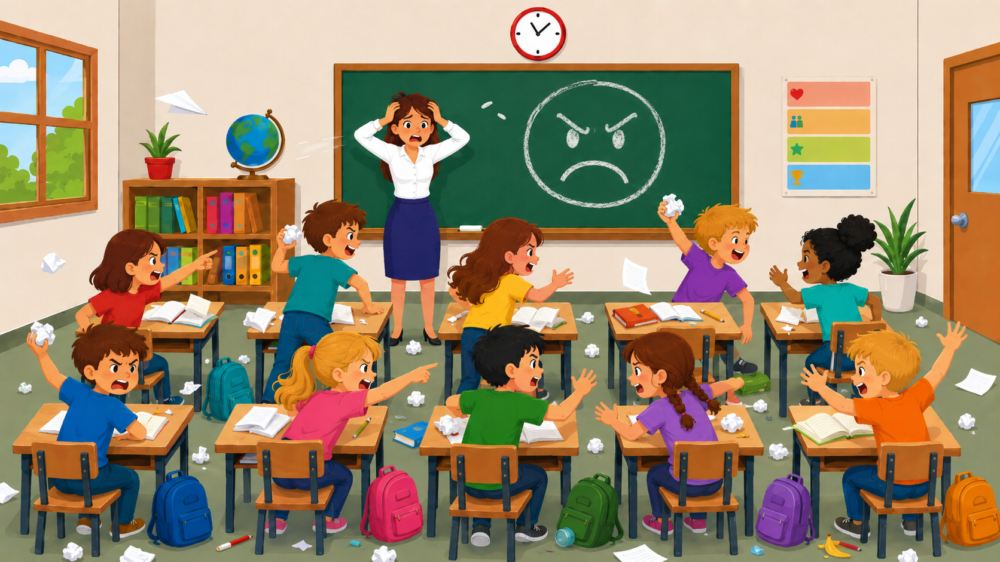

Regel wird geladen …
Ziehe diese Regel in eine Liste.
Interaktive Phase · Schritt 2
Wähle genau fünf verbindliche Klassenregeln aus. Die übrigen zehn Regeln werden aussortiert. Die Liste „Später zuordnen“ muss am Ende leer sein.
Aktuelle Regel
Ziehe diese Regel in eine Liste.
Genau fünf Regeln. Gute Passungen zu problematischen Schülerprofilen verbessern die spätere Startstabilität.
Alle nicht gewählten Regeln. Am Ende müssen hier zehn Regeln liegen.
Zwischenablage. Am Ende muss diese Liste leer sein.

Game over
Die Unterrichtsstabilität ist auf 0 gefallen.